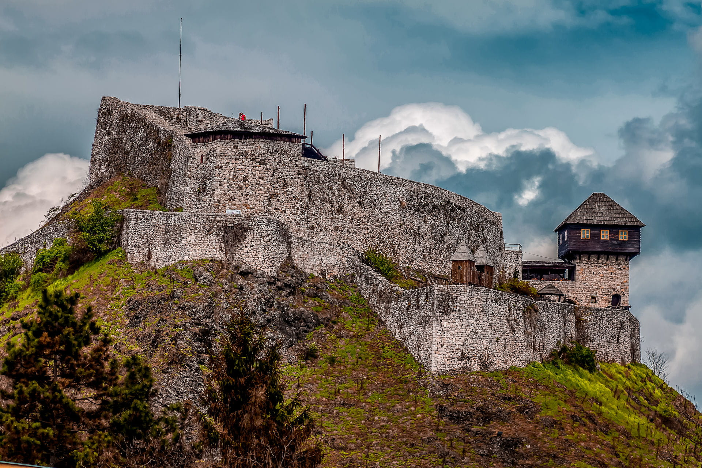
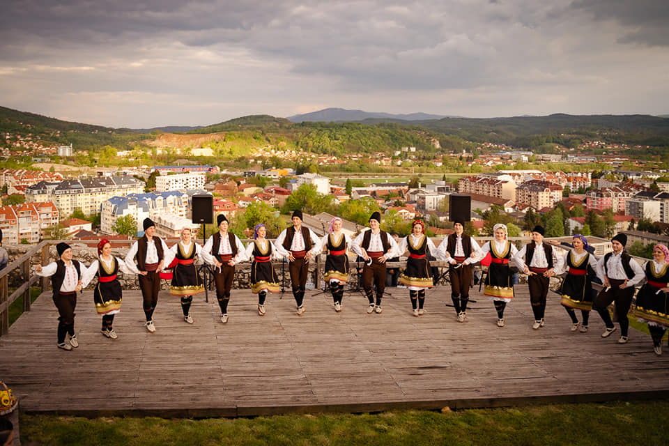

Doboj je grad bogate istorije i kulture. Nalazi se u sjevernom dijelu Bosne i Hercegovine. Poznat je po tvrđavi koja dominira gradom. Tokom vijekova bio je važna raskrsnica puteva. Danas predstavlja spoj tradicije i modernog života.

U Doboju se održavaju brojne kulturne manifestacije. Među njima su koncerti, festivali i izložbe. Ovi događaji okupljaju ljude iz cijelog regiona. Posebno su popularni ljetni festivali. Oni doprinose razvoju kulture grada.